Try it
Try Zyvor Retail on your own computer.
One command, about five minutes, and a shop full of invented products to look around. No sign-up, nothing to buy, and nothing leaves your machine.
- About 5 minutes
- Runs on your computer
- Remove in one command
- Fictional data only
- Not a certified tax system
Step 1
Pick your computer.
We guessed from your browser; change it if we were wrong.
Mac
Open Terminal (Spotlight, type Terminal), paste this, press Return.
curl -fsSL https://github.com/zyvorai/zyvor-retail-site/releases/latest/download/get.sh | sh -s -- up --demoYou need nothing installed first. If there is no container engine the installer offers to set one up (Homebrew, then podman) and asks before it does anything. Apple Silicon and Intel both work.
Windows
Not yet verified on a Windows PC. The script is tested with simulated Windows calls only. If you try it, please tell us what you see (feedback link at the bottom).
Open PowerShell, paste this, press Enter. It runs Zyvor Retail inside WSL 2 (Windows 10 version 2004 or later, or Windows 11).
& ([scriptblock]::Create((irm https://github.com/zyvorai/zyvor-retail-site/releases/latest/download/get.ps1))) up --demoIf WSL or a container engine is missing it asks before setting them up. Windows will ask for administrator approval and a restart; after that, run the same command again.
Linux
Open a terminal, paste this, press Enter.
curl -fsSL https://github.com/zyvorai/zyvor-retail-site/releases/latest/download/get.sh | sh -s -- up --demoIf there is no container engine it offers to install podman with apt or dnf (sudo asks for your password) and asks first.
Steps 2 to 4
What you will see.
2 The installer runs
It downloads one small image, starts Zyvor Retail with a fictional catalogue, prints a one-time email and password, and opens your browser to http://127.0.0.1:8080.
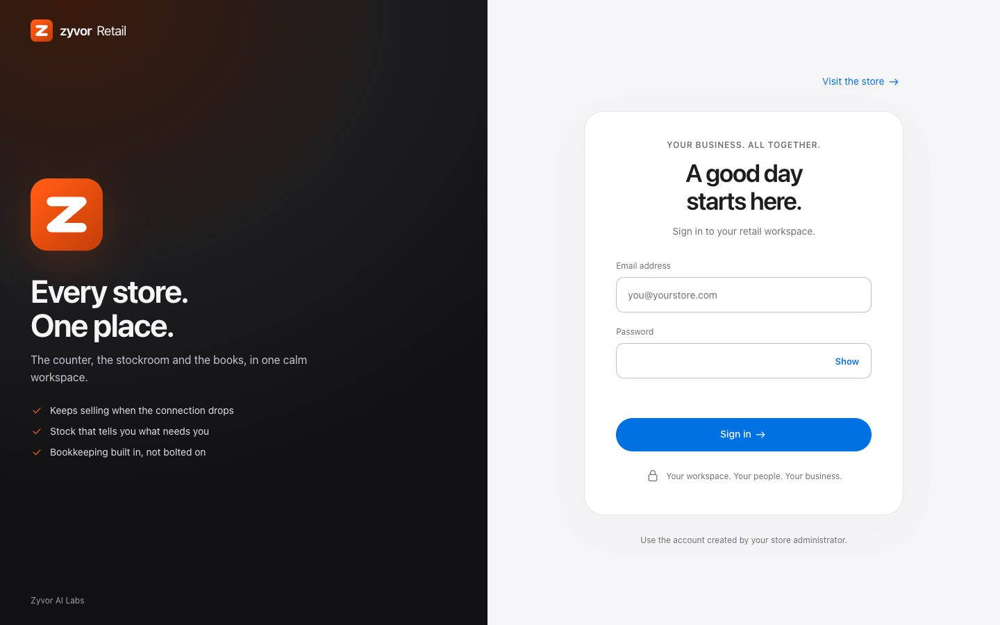
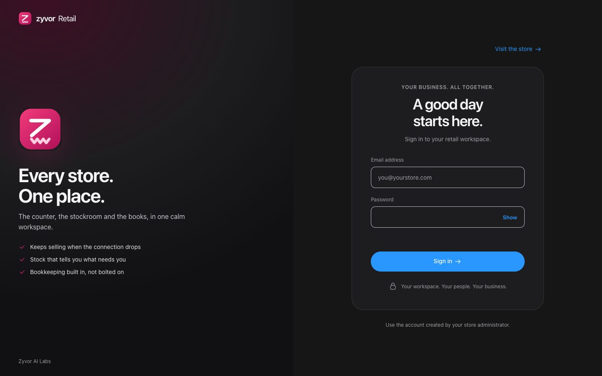
3 Sign in with the printed password
Use the email and password the installer printed (also saved under ~/.zyvor-retail/env). There is no default password. Keep that file private.
- Email: usually
owner@zyvor.local - Password: the long random string the installer showed
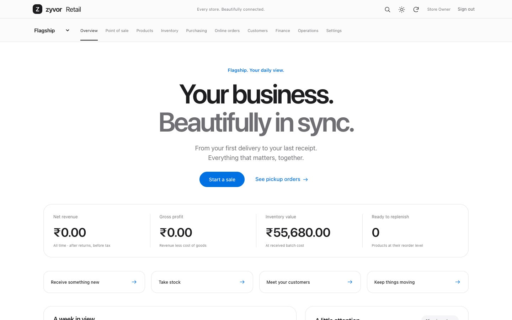
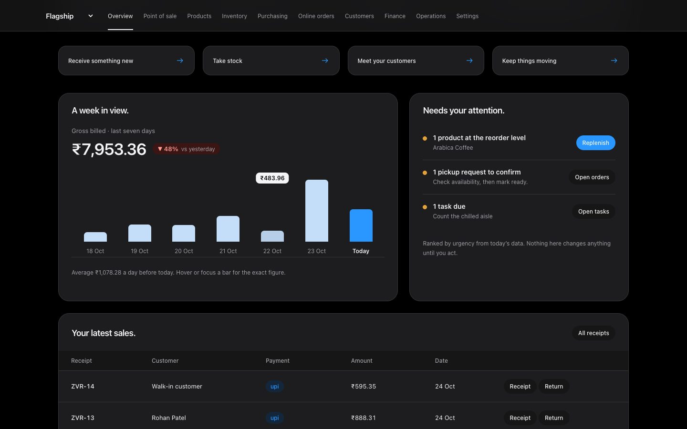
4 Look around the shop
Open a shift, ring up a sale, check stock and Ask. Everything here is invented; nothing is a real store or real money.
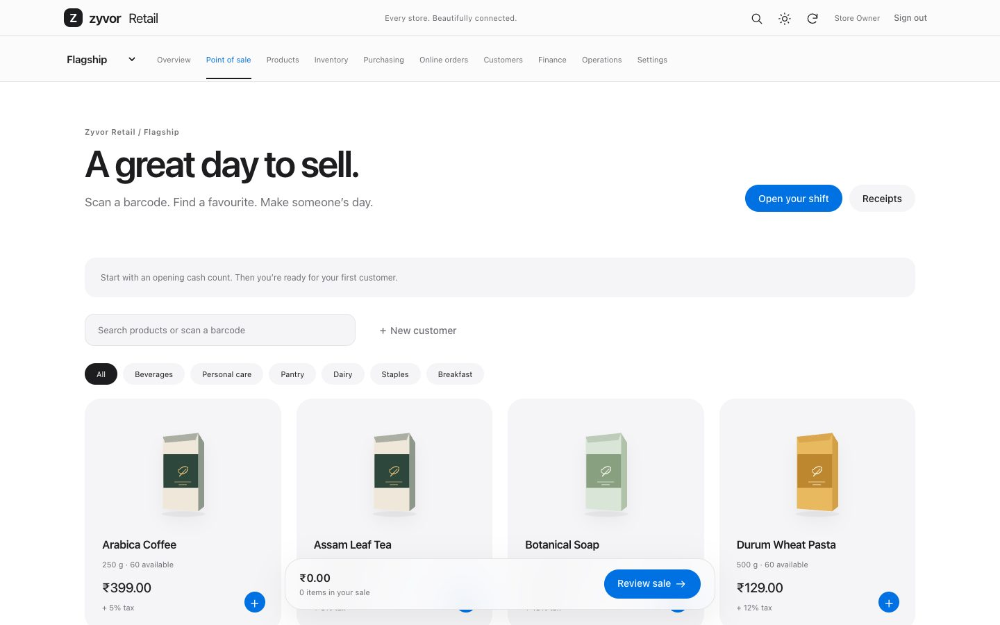
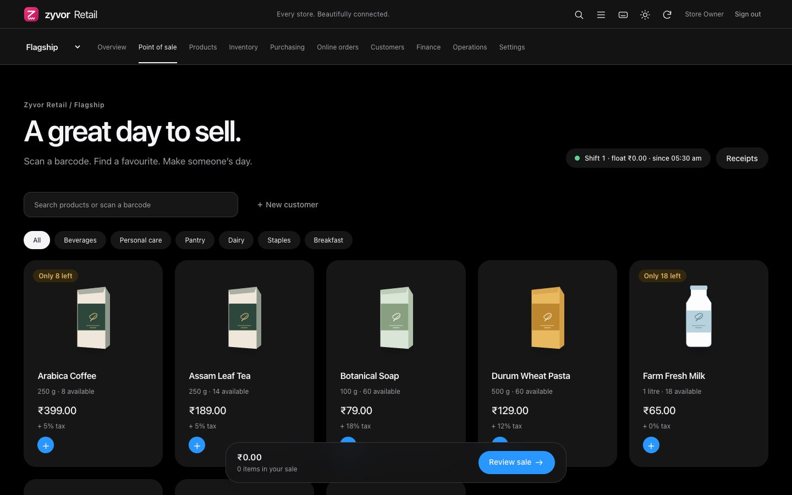
Step 5
A shop owner’s test drive.
Six things to try, about ten minutes. Tick them off as you go; your ticks stay in this browser only.
0 of 6 tried
Use the email and password the installer printed.
You should see The overview with what needs attention and a seven-day chart.
Operations → Open shift, then Point of sale. Press /, type a product, Enter, take cash, see change due.
You should see A tax invoice number and stock going down.
Inventory → Batches, open a row.
You should see Expiry, units and value at received cost.
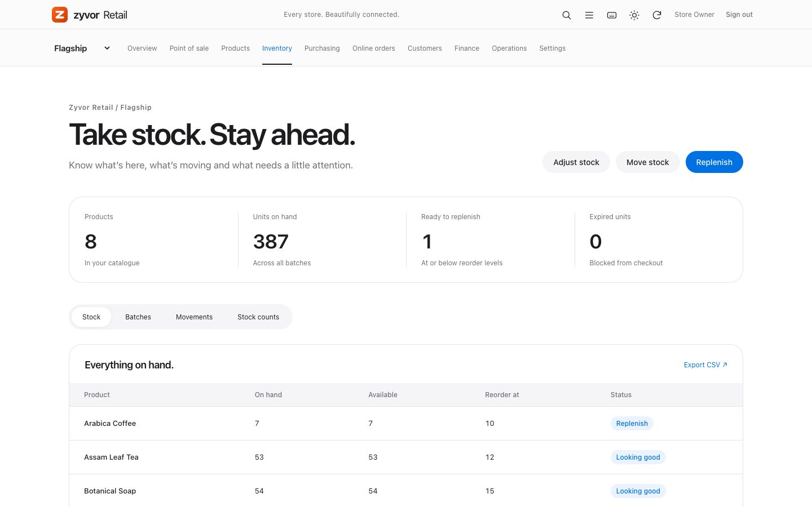
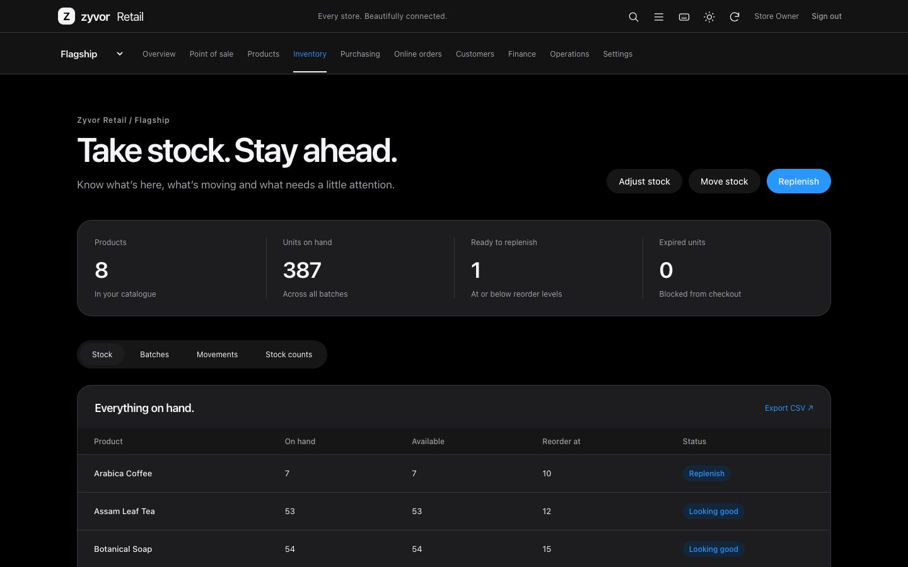
Inventory → Suggestions.
You should see Reorder advice with the arithmetic shown on every line. Nothing is ordered until you submit a form.
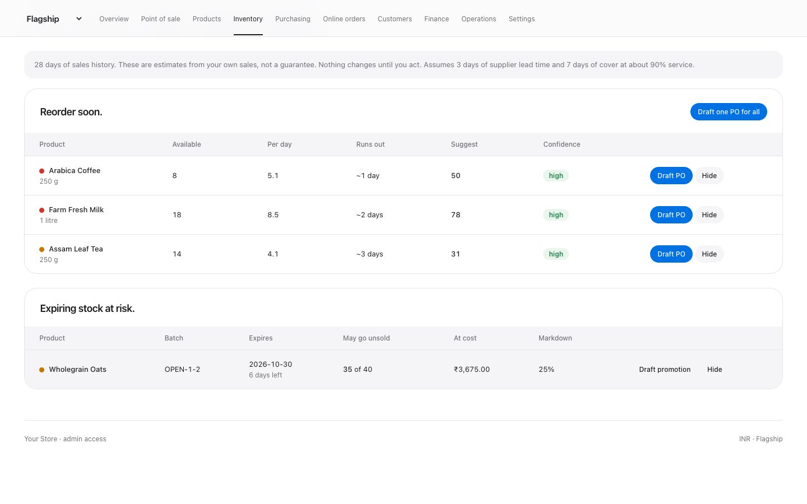
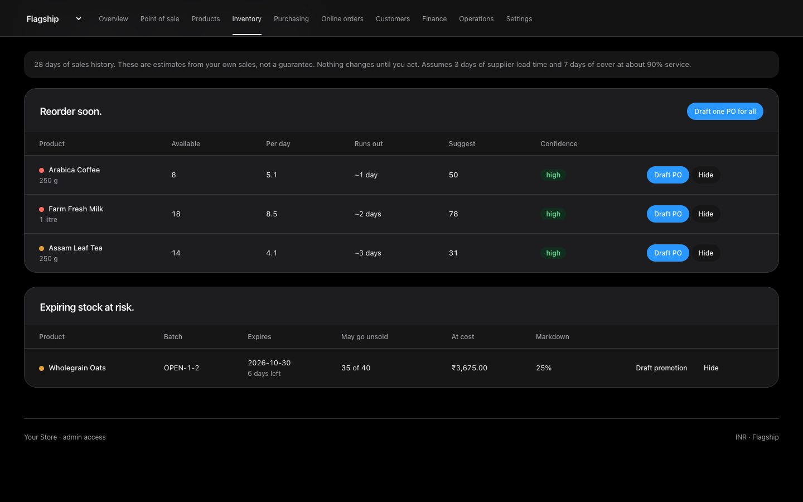
Click the sparkle button or press ⌘K and open Ask. Try “What sold best this week?”
You should see An answer with the records used. It is read-only and not tax advice.
Open
/shopin another tab.You should see A public catalogue and a pickup request form. Nothing is charged online.
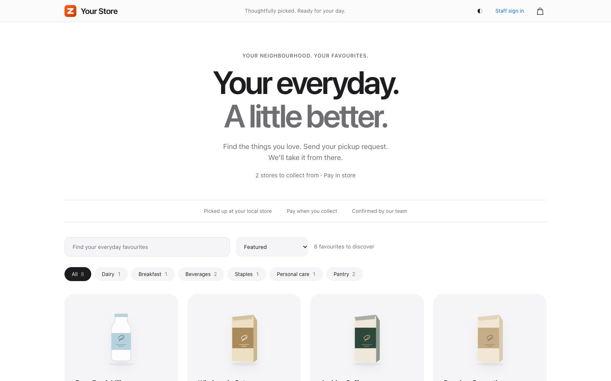
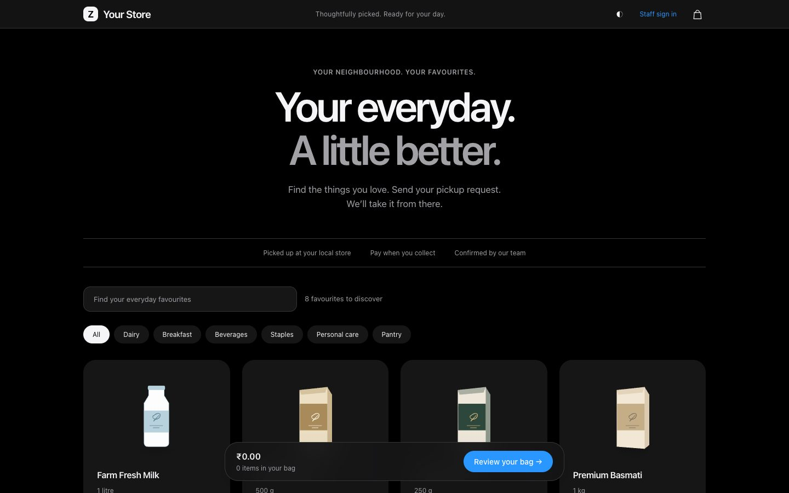
Pilot tax invoices and GSTR-1 CSV are included; this is not certified GST, not e-invoicing, and not a certified accounting system. Fictional data only.
Afterwards
Check it, or take it away.
Did everything install correctly?
Run ~/.zyvor-retail/zyvor-retail test. It checks health, readiness and that the printed password can sign in. all checks passed means everything works.
Remove it
Run ~/.zyvor-retail/zyvor-retail uninstall. The containers and their data are deleted; only a small settings folder, ~/.zyvor-retail, stays until you delete it.
If something goes wrong
Common questions.
Nothing opened, or the page cannot be reached
Give it a minute after the command finishes, then run ~/.zyvor-retail/zyvor-retail status and open the address the installer printed (usually http://127.0.0.1:8080). The app listens on this computer only.
It asked me to install something
If there is no container engine it offers to install one (podman, using Homebrew on a Mac, or your package manager on Linux; WSL and podman on Windows). It always asks first. Answering no stops with the exact steps to do it yourself.
I forgot the password
It is in ~/.zyvor-retail/env as RETAIL_ADMIN_PASSWORD. Or uninstall and run the install command again (that creates a new empty shop).
Port 8080 is already in use
Add a different port at the end of the command, for example --port 8081.
Windows: what happens the first time
If WSL 2 is missing the script offers to install it. Windows asks for administrator approval, then you restart Windows, open Ubuntu once from the Start menu to create a Linux user, and run the same command again.
I am behind a company proxy or firewall
The installer downloads from github.com and ghcr.io. Ask IT to allow both, or try from a home connection.
Can I see the source instead?
The application source is private. Ask sales what we can share with evaluators. The one-command trial uses a published container image, not the source ZIP.
Start over, or remove everything
~/.zyvor-retail/zyvor-retail uninstall deletes the containers and their data. To also delete the settings folder: rm -rf ~/.zyvor-retail (Windows: run it inside Ubuntu). Then run the install command again.
Tell us how it went.
What worked, what confused you, what you wanted to see. If something failed, include the output of ~/.zyvor-retail/zyvor-retail test and your computer type.